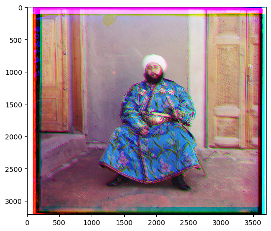

Project 1
Single-scale Implementation
The algorithm computes the best displacement between two images as follows:
- Exhaustively search over a window of possible displacements
(from -15 to 15 pixels) around the center of one image.
- For each possible displacement, calculate a score using Structural Similarity Index (SSIM).
- Select the displacement with the best score..
Cathedral
G->B: [2, 5]
R->B: [3, 12]

Monastery
G->B: [2, -3]
R->B: [2, 3]
Tobolsk
G->B: [2, 3]
R->B: [3, 6]
Multi-scale Pyramid Implementation
For larger images, the single-scale implementation proves to be too slow. I implemented a coarse-to-fine pyramid speedup to handle the .tif ones provided in the directory. Given two images, the algorithm works recursively as follows:
- Base case: If the images' max dimension is less than 400 pixels, return the single-scale algorithm's best displacement.
- Resize the two images to be half their size.
- Recursively pass the resized images to get the best displacement.
- Going up the stack, take the previous call's displacement and double each coordinate.
- Use this doubled-vector as the initial coordinates and search around a 2x2 window with the single-scale displacement algorithm.
Church
G->B: [2, -5]
R->B: [-4, 38]

Emir
G->B: [6, 34]
R->B: [50, 106]
Harvesters
G->B: [8, 58]
R->B: [6, 118]
Icon
G->B: [6, 44]
R->B: [14, 106]
Lady
G->B: [9, 54]
R->B: [14, 102]
Melons
G->B: [4, 70]
R->B: [12, 180]
Onion Church
G->B: [22, 50]
R->B: [6, 102]
Sculpture
G->B: [-6, 28]
R->B: [-22, 138]
Self Portrait
G->B: [22, 70]
R->B: [18, 166]

Three Generations
G->B: [6, 38]
R->B: [6, 102]
Train
G->B: [6, 38]
R->B: [6, 85]